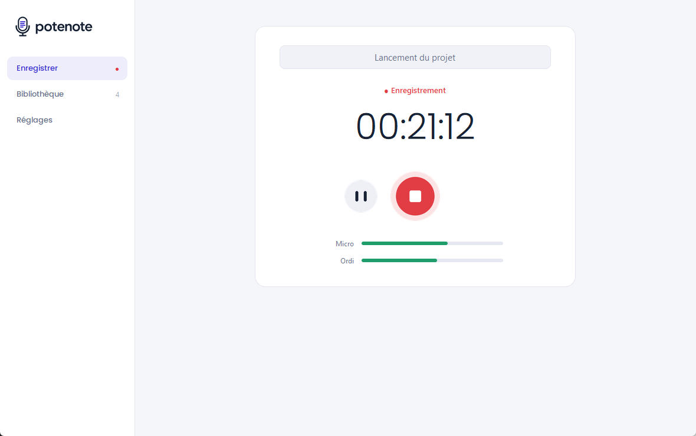
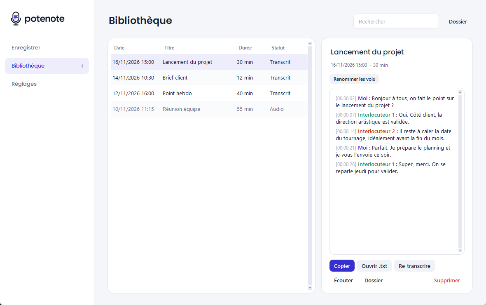

Potenote enregistre ta voix et celle des autres, puis transcrit la conversation en indiquant qui parle. Tout se passe sur ton ordinateur.
Télécharger pour Windows

Discord, Teams, Meet, WhatsApp… Rien à régler : ton micro et le son de l'ordi sont captés.
Ta voix et celles des autres sont séparées. Tu peux renommer chaque voix.
L'enregistrement et la transcription restent en local. Rien n'est envoyé en ligne.
Potenote te prévient quand une nouvelle version sort et l'installe en un clic.
La première installation télécharge les modèles de transcription (jusqu'à 3 Go). Une carte NVIDIA accélère la transcription, mais n'est pas obligatoire. Raccourci : Ctrl + Alt + R pour démarrer ou arrêter un enregistrement.